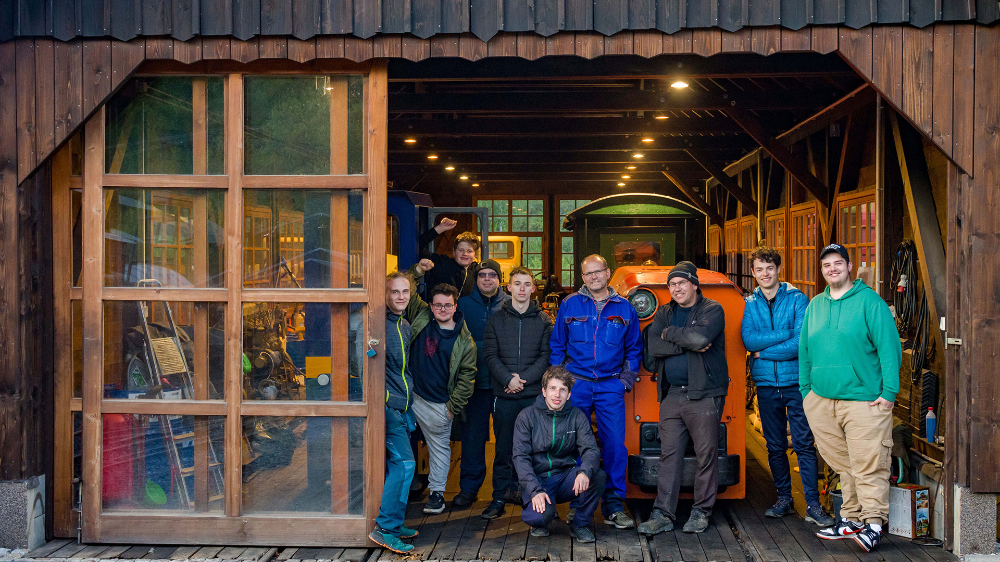

Vítej na našich webových stránkách!
Jsme Klub malých kolejí, skupina mladých nadšenců, která se schází v klubovně na hlavním nádraží v Karviné. Věnujeme se modelové železnici nejen ve velikosti H0, společně budujeme klubové kolejiště – od pokládky kolejí, přes elektrické zapojení až po detailní modelování krajiny.

Naše kolejiště slouží nejen jako zábava, ale i jako prostor k učení – zkoušíme různé stavební techniky, řešíme chyby i vylepšení a navzájem si předáváme zkušenosti. Zabýváme se také železničními předpisy, návěstmi a řízením provozu, abychom pochopili, jak železnice funguje v reálném světě.
Součástí našich aktivit jsou výjezdy po republice i do zahraničí, kde sledujeme různé typy zabezpečení, provozní uspořádání stanic nebo zajímavosti z praxe. Kromě toho se někteří členové věnují elektronice, návrhům a výrobě ovládacích pultů, návěstidel či přejezdů.
Zajímáme se také o zachování důlní techniky, především lokomotiv a vozů z našeho regionu. Tyto stroje pomáháme opravovat a rádi bychom pro ně vytvořili důstojné zázemí a zachovali na památku pro budoucí generace.
Klubovna na hlavním nádraží v Karviné
Chceš se dozvědět víc nebo se k nám přidat? Napiš nám, rádi ti odpovíme.